EMFin scientific evidence
9 / 9 grid runs complete. Verdict counts: {'fail': 1, 'pass': 5, 'unavailable': 3}. RE is synthetic; market returns use the bundled historical snapshot. This reference is a small numerical demonstration, not publication-grade evidence.
Code digest: 431b04d466cbdb17aa7e72d7d972d900352073ac57bafcc5633b084bd7b59464. Re-run definitions and exact input hashes are in manifest.json. Model valuation and execution seeds are in each stored result.
1. Testing
{'tests': 222, 'failures': 0, 'errors': 0, 'skipped': 0, 'status': 'pass'}
| claim | test | limit |
|---|---|---|
| Payout conservation / settlement cash | test_real_estate_v2.py, test_multiperiod* | Specified cash-flow convention only |
| Entropy-pooling / W1 implementation | test_entropy_pooling.py, test_wasserstein.py | Finite numerical cases and mathematical bounds, not forecast coverage |
| Packaging / private-source boundary | installed smoke and archive/provenance tests | Local evidence; CI status is separate |
| General economic usefulness | Not established by unit tests | Requires real client evidence and external validation |
Passing tests show that the named checks passed. They cannot establish economic truth, data independence or safe real-world execution. An installed-wheel smoke is a separate command and CI result, not inferred from this table.
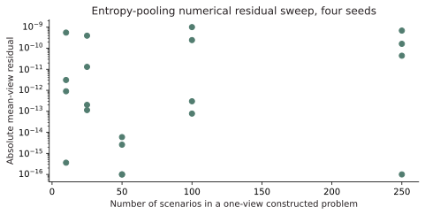
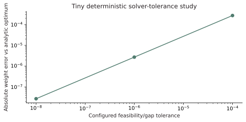
2. Matched-scenario benchmarks
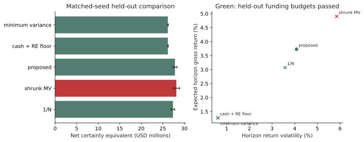
| method | net_CE_USDm | funding_pass | cash_weight | CML |
|---|---|---|---|---|
| 1/N | 27.3688 | True | 0.1429 | 0.0503 |
| shrunk MV | 28.1481 | False | 0.0 | 0.0842 |
| proposed | 27.8355 | True | 0.2816 | 0.0561 |
| cash + RE floor | 26.1837 | True | 0.9 | 0.0045 |
| minimum variance | 26.1837 | True | 0.9 | 0.0045 |
1/N: net CE $27.369M; held-out funding passed; cash 14.3%.
shrunk MV: net CE $28.148M; held-out funding failed; cash 0.0%.
proposed: net CE $27.836M; held-out funding passed; cash 28.2%.
cash + RE floor: net CE $26.184M; held-out funding passed; cash 90.0%.
minimum variance: net CE $26.184M; held-out funding passed; cash 90.0%.
Reference config: 79339ed4200b8670a93478f9d9c829f3f8d301e17dac6cbf7cea487164834f94. These are fresh simulated held-out paths, not chronological historical out-of-sample returns. Sample size and seed counts come from the selected config. Funding pass is not a universal risk pass or a recommendation. Raw paired batches are in benchmark_batches.csv.
3. Numerical proof points
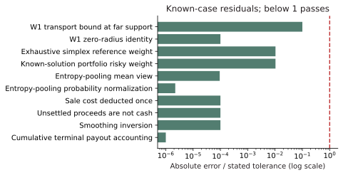
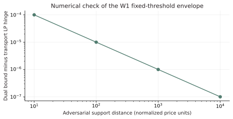
| test | expected | observed | absolute_error | tolerance | passed |
|---|---|---|---|---|---|
| Cumulative terminal payout accounting | 30.0 | 30.0 | 0.0 | 1e-10 | True |
| Smoothing inversion | 0.0 | 0.0 | 0.0 | 1e-12 | True |
| Unsettled proceeds are not cash | 0.0 | 0.0 | 0.0 | 1e-12 | True |
| Sale cost deducted once | 0.9 | 0.9 | 0.0 | 1e-12 | True |
| Entropy-pooling probability normalization | 1.0 | 0.9999999999999998 | 2.220446049250313e-16 | 1e-10 | True |
| Entropy-pooling mean view | 0.2 | 0.19999999999905682 | 9.431899705703017e-13 | 1e-08 | True |
| Known-solution portfolio risky weight | 0.25 | 0.24999989623135946 | 1.0376864054140178e-07 | 1e-05 | True |
| Exhaustive simplex reference weight | 0.25 | 0.24999989623135946 | 1.0376864054140178e-07 | 1e-05 | True |
| W1 zero-radius identity | 0.0 | 0.0 | 0.0 | 1e-12 | True |
| W1 transport bound at far support | 0.005 | 0.0049999 | 1.0000000000027348e-07 | 1e-06 | True |
4. Sensitivity and grid evidence
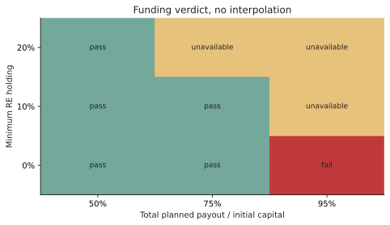
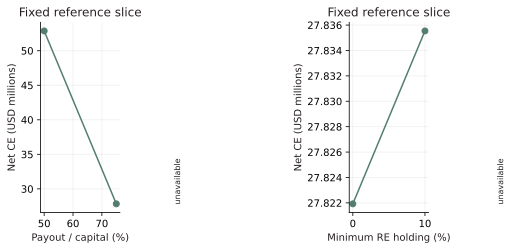
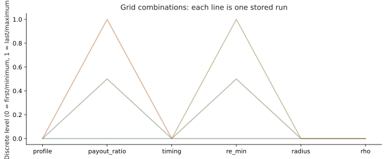
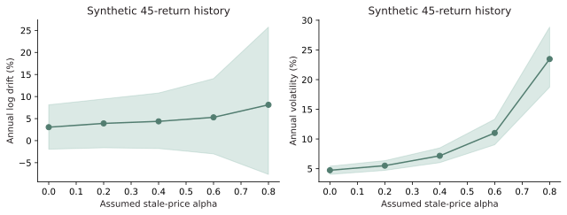
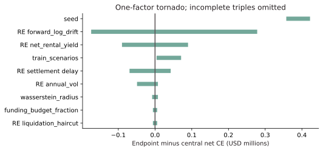
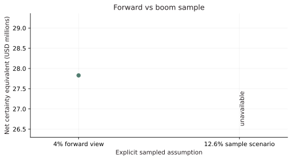
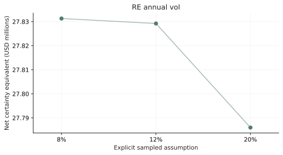
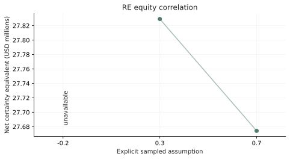
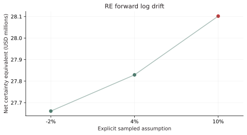
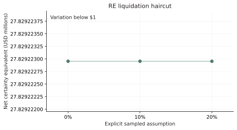
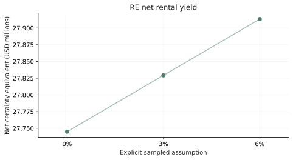
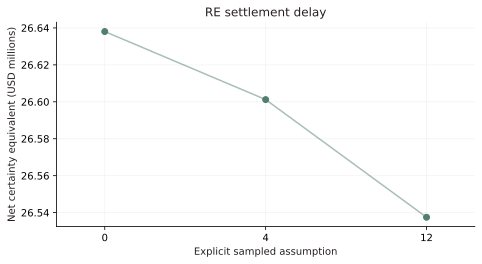
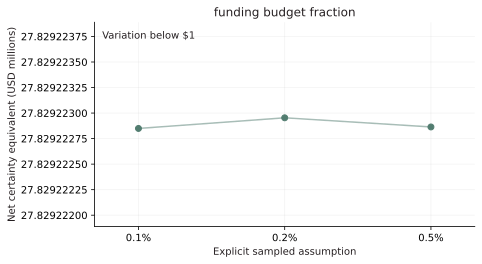
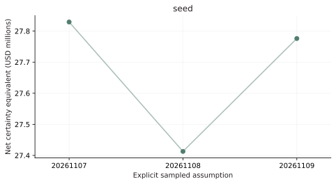
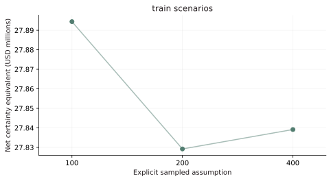
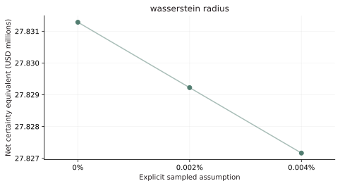
Only the configured axes are tested. Full RE history/unsmoothing uncertainty is in the private local model, not copied into this synthetic report. Sobol attribution is not reported because no justified joint input distribution has been supplied. The small sample-count and seed panels do not establish asymptotic convergence. Larger sample-count, solver-tolerance and seed convergence studies remain necessary for publication-grade conclusions. The full grid and the reference grid are separate experiment definitions, not interchangeable evidence.
Failures and incomplete runs
| config_id | status | verdict | error |
|---|
Reproduce and inspect
python -m experiments.scientific_report --config experiments/configs/reference.json --output artifacts/scientific
SQLite is the resumable ledger. summary.csv / summary.json / optional Parquet are analysis tables. Per-config JSON holds allocations, KPIs, all payout checks and fans. Changing model/config/data hashes creates new job IDs; it does not overwrite an old scientific claim. No external deployment or sharing occurs.